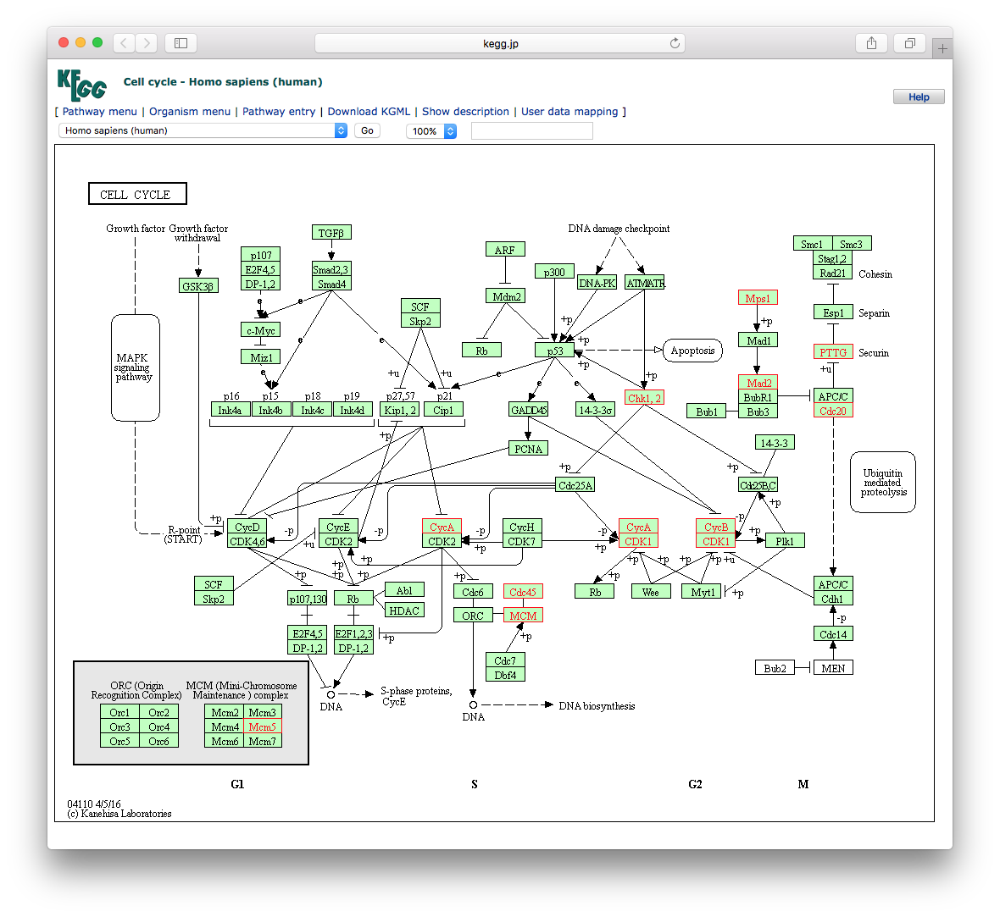
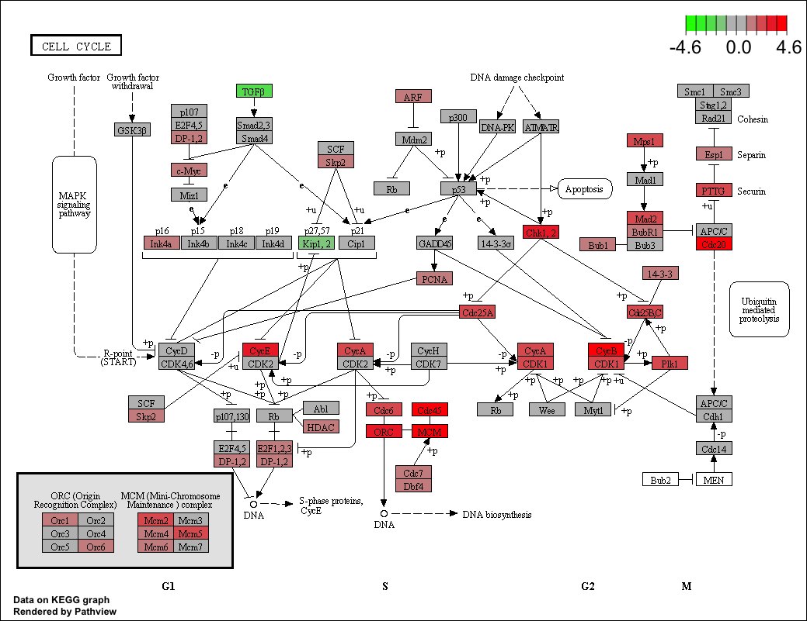

library(clusterProfiler)
search_kegg_organism('ece', by='kegg_code')
ecoli <- search_kegg_organism('Escherichia coli', by='scientific_name')
dim(ecoli)
head(ecoli)6 KEGG enrichment analysis
The KEGG FTP service has not been freely available for academic use since 2012, and there are many software packages using outdated KEGG annotation data. The clusterProfiler package supports downloading the latest online version of KEGG data using the KEGG website, which is freely available for academic users. Both KEGG pathways and modules are supported in clusterProfiler.
6.1 Supported organisms
The clusterProfiler package supports all organisms that have KEGG annotation data available in the KEGG database. Users should pass an abbreviation of academic name to the organism parameter. The full list of KEGG supported organisms can be accessed via http://www.genome.jp/kegg/catalog/org_list.html. KEGG Orthology (KO) Database is also supported by specifying organism = "ko".
The clusterProfiler package provides the search_kegg_organism() function to help search for supported organisms.
6.2 Finding correct parameters: A case study with Rice
The enrichKEGG() function requires three key parameters: gene (gene IDs), organism (species code), and keyType (type of gene ID). Many users struggle with determining the correct values for organism and keyType, especially for non-model organisms. Here, we use rice (Oryza sativa) as an example to demonstrate how to find these parameters.
6.2.1 Determine the organism code
The organism parameter accepts a KEGG organism code (e.g., ‘hsa’ for human, ‘mmu’ for mouse). To find the code for your species, you can search the KEGG Organism Catalog or use the search_kegg_organism() function as mentioned above.
For rice, searching for “rice” or “Oryza sativa” in the catalog reveals two main subspecies: * Oryza sativa japonica (Japanese rice) -> code: osa * Oryza sativa indica (Indian rice) -> code: dosa
Choose the one that matches your data. For example, if we choose dosa.
6.2.2 Determine the keyType
Once the organism is determined, we need to know what gene ID types (keyType) are supported for that organism. A practical trick is to use enrichKEGG() as a query tool. By inputting a dummy gene ID and a likely keyType, the function will return an error message listing the expected ID format if the input is invalid.
# Try 'kegg' as keyType with a dummy gene
enrichKEGG(gene = "abc", organism = "dosa", keyType = "kegg")
# Output:
# --> No gene can be mapped....
# --> Expected input gene ID: Os06t0664200-01,Os02t0534400-01,Os06t0185100-00...
# --> return NULL...
# Try 'ncbi-geneid'
enrichKEGG(gene = "abc", organism = "dosa", keyType = "ncbi-geneid")
# Output:
# Error in KEGG_convert("kegg", keyType, species) :
# ncbi-geneid is not supported for dosa ...
# Try 'uniprot'
enrichKEGG(gene = "abc", organism = "dosa", keyType = "uniprot")
# Output:
# Error in KEGG_convert("kegg", keyType, species) :
# uniprot is not supported for dosa ...From the output, we learn that for dosa, the supported keyType is kegg, and the expected gene ID format looks like Os06t0664200-01 (RAP-ID). For osa, the gene IDs are typically NCBI Gene IDs (e.g., 3131385).
6.2.3 ID Conversion
If your gene list uses a different ID type (e.g., LOC4334374 or LOC_Os01g01010.1), you need to convert them to the supported KEGG ID.
For LOC4334374, you can use AnnotationHub to retrieve the rice OrgDb and convert symbols to Entrez IDs (which correspond to osa KEGG IDs).
library(AnnotationHub)
ah <- AnnotationHub()
# Query for Oryza sativa
query(ah, 'oryza')
oryza <- ah[['AH55775']] # Example AH ID, check for latest
# Check keys
head(keys(oryza, keytype = "SYMBOL"))
# Convert SYMBOL to ENTREZID
# ...For RAP-ID conversion (e.g., LOC_Os01g01010.1 to Os01t0100100-01), you might need to download mapping files from the Rice Annotation Project Database (RAP-DB) or Oryzabase and perform the conversion manually or using scripts.
6.2.4 Perform Enrichment Analysis
With the correct organism, keyType, and converted gene IDs, you can now run the analysis:
# For osa (using Entrez IDs)
kk <- enrichKEGG(gene = gene_list_entrez,
organism = "osa",
keyType = "kegg", # or 'ncbi-geneid' if supported
pvalueCutoff = 0.05)
# For dosa (using RAP-IDs)
kk <- enrichKEGG(gene = gene_list_rap,
organism = "dosa",
keyType = "kegg",
pvalueCutoff = 0.05)This approach of identifying organism code and verifying keyType via error messages applies to any species available in the KEGG database.
6.3 KEGG Data Localization
The clusterProfiler package retrieves KEGG data online via the KEGG API, which ensures that users analyze their data with the latest knowledge. However, this dependency on internet access can be a limitation if the network is unstable or unavailable (e.g., in some cloud environments). Furthermore, for the sake of reproducibility, it is often desirable to freeze the KEGG data version used in an analysis.
To address these issues, we provide two methods to perform KEGG analysis locally.
6.3.1 Using gson
The gson package provides the gson_KEGG() function to download the latest KEGG pathway and module data for a specific organism and store it in a GSON object. This object contains all necessary information for enrichment analysis and can be saved to a file for offline use.
library(gson)
# download KEGG data for human
kk_gson <- gson_KEGG(species = "hsa")
# save to a file
write.gson(kk_gson, file = "kegg_hsa.gson")
# read from file
kk_gson <- read.gson("kegg_hsa.gson")The GSON object or the file can be used in enricher() and GSEA() functions (via gson parameter or by parsing it). For more detailed information on using the GSON format, including how to perform generalized enrichment analysis with multiple knowledge bases using gsonList, please refer to Section 7.3.
6.3.2 When the KEGG API is unreachable
In some server or cloud environments, direct access to the KEGG REST API may fail (for example, returning 403 Forbidden). In such cases, enrichKEGG() and gseKEGG() may fail before the enrichment analysis starts, simply because the annotation data cannot be retrieved online.
A practical workaround is to build the KEGG annotation on another machine that has normal access to KEGG, save it locally, and then reuse it on the target server. This is also a convenient way to freeze the KEGG version used in an analysis, which helps reproducibility.
## on a machine that can access KEGG
kk_gson <- gson_KEGG("hsa")
saveRDS(kk_gson, file = "kegg_hsa_gson.rds")
## on the server
kk_gson <- readRDS("kegg_hsa_gson.rds")
kk <- enrichKEGG(gene = gene, organism = kk_gson)
kk2 <- gseKEGG(geneList = geneList, organism = kk_gson)This approach is useful when the analysis server has unstable network access, when the KEGG API is temporarily unavailable, or when users want to freeze the exact KEGG version used in an analysis for later reproduction.
6.3.3 Using createKEGGdb
Another approach is to create a local KEGG.db package containing the KEGG data. While the official KEGG.db has not been updated since 2011, we can generate a new one using the createKEGGdb package.
First, install createKEGGdb from GitHub:
remotes::install_github("YuLab-SMU/createKEGGdb")Then, use create_kegg_db() to download data and package it. You can specify one or more species, or even “all” to download data for all supported species.
library(createKEGGdb)
# create KEGG.db for human and Arabidopsis
create_kegg_db(c("hsa", "ath"))This command will generate a KEGG.db_1.0.tar.gz file in the current directory. Install it as a standard R package:
install.packages("KEGG.db_1.0.tar.gz", repos=NULL, type="source")Once installed, you can perform enrichment analysis using the local data by setting use_internal_data = TRUE in enrichKEGG():
library(KEGG.db)
kk <- enrichKEGG(gene = gene,
organism = 'hsa',
pvalueCutoff = 0.05,
use_internal_data = TRUE)This ensures that the analysis runs offline and is fully reproducible using the installed KEGG.db version.
6.4 KEGG ID Conversion
The clusterProfiler package provides the bitr_kegg() function to support ID conversion via the KEGG API. This is particularly useful for species that do not have an OrgDb object but are supported by KEGG.
The examples in this section require live KEGG REST access. To keep the book build reproducible when the KEGG API is slow or unreachable, we show them without executing them during rendering.
6.4.1 Basic Usage
Here is an example of converting KEGG IDs to NCBI Protein IDs and then to UniProt IDs for human genes.
library(clusterProfiler)
data(gcSample)
hg <- gcSample[[1]]
head(hg)
# Convert KEGG ID to NCBI Protein ID
eg2np <- bitr_kegg(hg, fromType='kegg', toType='ncbi-proteinid', organism='hsa')
head(eg2np)
# Convert NCBI Protein ID to UniProt ID
np2up <- bitr_kegg(eg2np[,2], fromType='ncbi-proteinid', toType='uniprot', organism='hsa')
head(np2up)The ID type (both fromType and toType) should be one of ‘kegg’, ‘ko’, ‘ncbi-geneid’, ‘ncbi-proteinid’, or ‘uniprot’. The ‘kegg’ ID is the primary gene ID used in the KEGG database, while ‘ko’ refers to KEGG Orthology identifiers. A rule of thumb is that ‘kegg’ gene ID corresponds to entrezgene ID for eukaryote species and Locus ID for prokaryotes.
For many prokaryote species, entrezgene IDs are not available. For example, ece:Z5100 (E. coli O157:H7 EDL933) has NCBI-ProteinID and UniProt links, but not NCBI-GeneID. Attempting to convert Z5100 to ncbi-geneid will result in an error stating that ncbi-geneid is not supported. However, conversion to ncbi-proteinid or uniprot is possible.
# Example for prokaryote ID conversion
bitr_kegg("Z5100", fromType="kegg", toType='ncbi-proteinid', organism='ece')
bitr_kegg("Z5100", fromType="kegg", toType='uniprot', organism='ece')6.4.2 Converting KO numbers to Pathways
A common confusion exists between K numbers (KEGG Orthology) and ko numbers (KEGG Pathway maps). K numbers represent orthologous groups, while ko numbers represent pathway maps. Users often want to map K numbers to pathways.
bitr_kegg("K00844", "kegg", "Path", "ko")To retrieve the names of the pathways (e.g., “Glutathione metabolism” instead of “ko00480”), we can define a simple helper function ko2name to query the KEGG API.
x <- bitr_kegg("K00799", "kegg", "Path", "ko")
y <- ko2name(x$Path)
merge(x, y, by.x='Path', by.y='ko')6.5 KEGG pathway over-representation analysis
data(geneList, package="DOSE")
gene <- names(geneList)[abs(geneList) > 2]
kk <- enrichKEGG(gene = gene,
organism = 'hsa',
pvalueCutoff = 0.05)
head(kk)Input ID type can be kegg, ncbi-geneid, ncbi-proteinid or uniprot (see also ?sec-kegg-id-conversion). Unlike enrichGO(), there is no readable parameter for enrichKEGG(). However, users can use the setReadable() function (see also Section 19.2) if there is an OrgDb available for the species.
6.6 Translating Gene IDs to Names
For GO analysis, the readable parameter controls whether to translate the IDs to human-readable gene names. This parameter is not available for KEGG analysis. However, the setReadable() function can translate input gene IDs to gene names if the corresponding OrgDb object is available.
library(org.Hs.eg.db)
# 'kk' is the enrichKEGG result from the previous section
kk <- setReadable(kk, OrgDb = org.Hs.eg.db, keyType="ENTREZID")
head(kk)6.7 KEGG pathway gene set enrichment analysis
kk2 <- gseKEGG(geneList = geneList,
organism = 'hsa',
minGSSize = 120,
pvalueCutoff = 0.05,
verbose = FALSE)
head(kk2)6.8 Topology-aware KEGG enrichment
The same high-level design is now available for topology-aware KEGG analysis. nseKEGG() performs single-network enrichment and mnseKEGG() extends the workflow to multiple network layers, while keeping the familiar clusterProfiler interface.
For a lightweight and reproducible example, we reuse the same shared demo object as in the GO chapter and pass a local KEGG-style GSON object through the organism argument.
demo <- clusterprofiler_enrichit_demo()kk_nse <- nseKEGG(
geneList = demo$geneList_evidence,
network = demo$network,
organism = demo$kegg_gson,
minGSSize = 5,
maxGSSize = 500,
threshold = 1e-6,
maxIter = 50,
verbose = FALSE,
pvalueCutoff = 1,
method = "sample",
nPerm = 30
)
head(as.data.frame(kk_nse)[, c("ID", "Description", "NES", "p.adjust")], 3) ID Description NES
hsa_demo_04010 hsa_demo_04010 MAPK signaling pathway (demo) 5.350182
hsa_demo_04910 hsa_demo_04910 Insulin signaling pathway (demo) 5.168976
hsa_demo_04110 hsa_demo_04110 Cell cycle (demo) 5.144267
p.adjust
hsa_demo_04010 0.03225806
hsa_demo_04910 0.03225806
hsa_demo_04110 0.03225806kk_mnse <- mnseKEGG(
seed_list = demo$seed_list,
networks = list(RNA = demo$network, PROT = demo$network_2),
couplings = demo$couplings,
organism = demo$kegg_gson,
collapse = "weighted_mean",
layer_weights = c(RNA = 1, PROT = 1.2),
minGSSize = 5,
maxGSSize = 500,
threshold = 1e-6,
maxIter = 50,
verbose = FALSE,
pvalueCutoff = 1,
method = "sample",
nPerm = 30
)
head(as.data.frame(kk_mnse)[, c("ID", "Description", "NES", "p.adjust")], 3) ID Description NES
hsa_demo_04110 hsa_demo_04110 Cell cycle (demo) 5.700310
hsa_demo_04010 hsa_demo_04010 MAPK signaling pathway (demo) 5.499738
hsa_demo_04910 hsa_demo_04910 Insulin signaling pathway (demo) 4.737510
p.adjust
hsa_demo_04110 0.03225806
hsa_demo_04010 0.03225806
hsa_demo_04910 0.03225806In a real analysis, users can pass a KEGG organism code such as "hsa" directly. Here we use a local GSON object to keep the example self-contained and reproducible.
6.9 KEGG Pathway Classification
KEGG pathways are organized into a hierarchical structure with top-level categories such as “Metabolism”, “Genetic Information Processing”, “Environmental Information Processing”, “Cellular Processes”, “Organismal Systems”, “Human Diseases”, and “Drug Development”. This classification helps users interpret enrichment results by providing higher-level biological context. For instance, users might be interested specifically in signaling pathways (“Environmental Information Processing”) or metabolic pathways (“Metabolism”) while excluding disease-related pathways.
The clusterProfiler package integrates this classification information directly into the enrichment results. The output data.frame contains category and subcategory columns, which can be used to filter or group the results.
6.9.1 Data Update Strategy
While clusterProfiler queries the KEGG API for species-specific gene sets to ensure the latest data is used, the pathway classification structure is relatively stable and universal across species. To optimize performance and avoid unnecessary dependencies (e.g., web scraping packages), clusterProfiler caches this classification data within the package.
To prevent this cached data from becoming outdated, the package utilizes GitHub Actions for automated maintenance. A workflow is triggered weekly to crawl the latest pathway classification from the KEGG website. If any discrepancies are found between the online data and the cached data, the workflow automatically creates a Pull Request to update the package. This automation ensures that the classification data in clusterProfiler remains synchronized with KEGG updates efficiently and reliably.
6.10 KEGG module over-representation analysis
KEGG Module is a collection of manually defined functional units. In some situations, KEGG Modules have a more straightforward interpretation.
mkk <- enrichMKEGG(gene = gene,
organism = 'hsa',
pvalueCutoff = 1,
qvalueCutoff = 1)
head(mkk) 6.11 KEGG module gene set enrichment analysis
mkk2 <- gseMKEGG(geneList = geneList,
organism = 'hsa',
pvalueCutoff = 1)
head(mkk2)6.12 Visualize enriched KEGG pathways
The enrichplot package implements several methods to visualize enriched terms. Most of them are general methods that can be used on GO, KEGG, MSigDb, and other gene set annotations. Here, we introduce the clusterProfiler::browseKEGG() and pathview::pathview() functions to help users explore enriched KEGG pathways with genes of interest.
To view the KEGG pathway, users can use the browseKEGG() function, which will open a web browser and highlight enriched genes. See Figure 6.1 for a screenshot example.
browseKEGG(kk, 'hsa04110')
Users can also use the pathview() function from the pathview (Luo and Brouwer 2013) to visualize enriched KEGG pathways identified by the clusterProfiler package (Yu et al. 2012). See Figure 6.2 for a rendered pathway image.
The following example illustrates how to visualize the “hsa04110” pathway, which was enriched in our previous analysis.
library("pathview")
hsa04110 <- pathview(gene.data = geneList,
pathway.id = "hsa04110",
species = "hsa",
limit = list(gene=max(abs(geneList)), cpd=1))
pathview(). Gene expression values can be mapped to gradient color scale.
References
Luo, Weijun, and Cory Brouwer. 2013. “Pathview: An R/Bioconductor Package for Pathway-Based Data Integration and Visualization.” Bioinformatics 29 (July): 1830–31. https://doi.org/10.1093/bioinformatics/btt285.
Yu, Guangchuang, Le-Gen Wang, Yanyan Han, and Qing-Yu He. 2012. “clusterProfiler: An r Package for Comparing Biological Themes Among Gene Clusters.” OMICS: A Journal of Integrative Biology 16 (5): 284–87. https://doi.org/10.1089/omi.2011.0118.